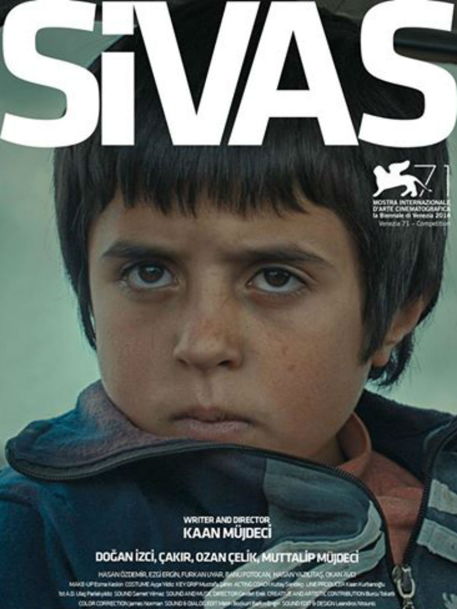

Yozgat, Yavuz ve Neşe'nin hikayesinin başladığı ya da bittiği yerdir... Aldıkları bir iş teklifi sonrasında Yozgat'a taşınan müzik öğretmeni ve şarkıcı Yavuz ve öğrencisi Neşe hayatlarının önemli bir dönüm noktasına adım atmak üzeredir. İcra ettikleri müzik türüyle bu yeni şehirde kimsenin ilgisini çekemeyen ikilinin çabalarına, buraya taşındıkları ilk günlerde tanıştıkları Sabri'nin yardımları da eklenir ancak sonuç yine olumsuzdur.
Bu olumsuz sonuç beklenmedik gelişmeleri de beraberinde getirir...
Filmin yönetmen koltuğunda ilk uzun metraj çalışması Uzak İhtimal ile büyük beğeni kazanan ve İstanbul Film Festivali'nde Altın Lale ödülüne layık görülen Mahmut Fazıl Coşkun bulunuyor. Başrollerinde ise son dönemin başarılı isimlerinden Ercan Kesal, Ayça Damgacı ve Tansu Biçer yer alıyor.
Yönetmen: Mahmut Fazıl Coşkun
Yapım Yılı: 2013
IMDb: 6.8

İsminin Sivas olması sizi yanıltmasın. Yozgat'ın küçük bir köyünde yaşayan 11 yaşındaki Aslan'ın yaşadığı küçük köydeki tek gündeliği okula gitmek ve arkadaşlarıyla vakit geçirmekten ibarettir;
en büyük derdiyse aynı sınıfta okuduğu Ayşe'ye olan aşkıdır. Bir gün yaşadıkları yerde bir hayli popüler olan köpek dövüşlerinden birine denk gelen Aslan, burada dövüşü kaybeden ve yaralanıp yere yığılan Sivas adında terk edilmiş kangal köpeğiyle karşılaşır. Bu karşılaşma o andan itibaren yaşayacağı hayatı etkileyecek en önemli dönüm noktalarından biri olur.
Kaan Müjdeci'nin yönetmenliğini ve senaristliğini üstlendiği ilk uzun metrajlı filminin başrolünde Aslan'ı Doğan İzci canlandırırken, ona köpek Çakır eşlik ediyor.
Film, 88.Akademi Ödülleri, yabancı dilde en iyi film dalında Türkiye'nin Oscar aday adayı olmuştur.